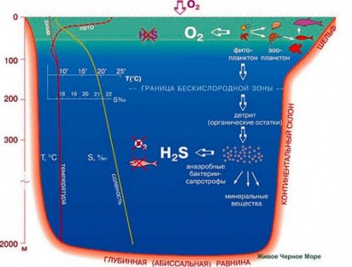

Сірководень у Чорному морі
Сірководень (Н2S) - речовина загальноотруйної дії, безбарвний горючий газ з різким характерним запахом тухлих яєць
Сірководень у чорному морі не є унікальністю, майже у кожній водоймі і в прісній і в сольоній він є але не в таких кількостях . У чорному морі він міститься майже в 90% ВОДИ МОРЯ. Дослідницька команда Андрусова знайшла на дні мора мушлі які живуть лише в опрісневілих лиманах та набагато меньш солоному каспійскому морі що доводить Чорне море раніше було озером великих розмірів Під час зміщення літосфери у 7562 р. до н.е. Середземне море зачерпнуло багато солоної океанічної води. У той час Чорне море було невеликим прісноводним озером. Коли ж пішло інтенсивне танення європейських льодовиків, то рівень води в Середземному морі зріс ще більше. Десь у 5600 р. до н.е. води Середземного моря прорвалися через Босфор і хлинули в те озеро. витиснувши легку прісну воду на поверхню. Оскільки перемішування відбувається слабо навідміну від інших водойм то усьому сірководню що виділяється не вистачає кисню щою окиснюючись виділяти чисту воду та сірку . тому на дні моря майже немає живих організмів бо весь кисень йде на реакцію з сірководнем .У води яку науковці добули з дна був різкий запах тухлих яєць що є основною ознакою сірководню.
У результаті експедиції Андрусова 1890 року було відкрито форму чорного моря я ке має форму витягнутої чаші з найбільшою глубиною 2244метри ,але сезонні перепади температур відбуваються тільки вище 200 метрів де в літній час зафіксували 25С. Верхній шар збагачуеться водами річок ,бере участь в кругообігу води і збагачуючись киснем є придатним для життя (термоклін).Далі йде проміжний шар який характеризується різкою зміною солоності і тим самим не дає переміхшуватись чорному морю знаходиться приблизно між. Нище 200 метрів зафіксували сталу температуру яка майже не зазнає змін протягом року приблизно 9С а також вітсутність життя (крім анаеробних бактерій) . дослідники зафіксували солоність верхнього шару 17%.та дна 22 %. А біля протоки Босфор воду солоністю 34%. Завдяки цьому було доведенно що глубинні води чорного моря виникають у наслідок змішування місцевих вод з водами мраморного моря . Дослідники знайшли на дні мора мушлі які живуть лише в опрісневілих лиманах та набагато меньш солоному каспійскому морі що доводить Чорне море раніше було озером великих розмірів глобальне потепління підвищило рівень океану і солоні води середземного моря хлинули в чорне море витиснувши легку прісну воду на поверхню.у води яку науковці добули з дна був різкий запах тухлих яєць що є основною ознакою сірководню

Андрусов висловив гіпотезу : сірководень виник у наслідок анаеробного гниття трупів різних живих організмів які містять білок розкладаються і утворюють сірководень .(Деякі вчені не виключають цього але при доступі кисню білок швитко гниючи виділяє не велику к-сть сірководню то при анаеробних умовах цей процес якщо й відбувається то дуже повільно.Тому цю теорію частіше всього випускають . )
Існують декілька теорій походження сірководню одну із них висловив Н Д Зелі(и)нський вже наступного року після андрусова оскільки не розділяв його гіпотези. Зелінський провів свою експедицію і встановив що сірководень має бактеріальне походження також дослідивши мул знайшов анаеробни бактерії які використовують замість кисню сульфіти і сульфати з відновленням до сірководню а також показав що мікроорганізми чорного моря можуть виділяти сірководень при повній відсутності білкової речовини.(Анаеробні бактерії мікроспіра). Також він довів що більшість лиманів чорного моря знаходяться в стадії сірководневого бродіння складного біохімічний процес, що складається в виділені сапрогенними мікроорганізмами сірководню і аміаку з складних органічних, а також неорганічних, що містять сірку речовин і в подальших реакціях цих газів з різними солями, які надходили з ними в зіткнення в навколишньому середовищі.
Наступні теорія відносномолода так звана геологічна теорія говорить про те що сірководень виділяється у результаті підводної вулканічної діяльності.
Цікавим фактом є й те що оскільки наші предки опускали металічні предмети в чорне море а сірководень викликає сильну коррозію металу особливо якщо в газі є волога ,то виймаючи їх вони покривались чорним шаром . І саме тому можливо Чорне море називається саме так
Сірководень в Чорному морі розташовується не рівномірно близько берегу на глубині від 150 метрів а посеред моря від 110м але не так давно зафіксували його й на глубині 50 метрів
Вчені також зафіксували що сезонні перепади температур відбуваються тільки вище 200 метрів де в літній час зафіксували 25С. Верхній шар збагачуеться водами річок ,бере участь в кругообігу води і збагачуючись киснем є придатним для життя (термоклін).Далі йде проміжний шар який характеризується різкою зміною солоності і тим самим не дає переміхшуватись чорному морю знаходиться приблизно між. Нище 200 метрів зафіксували сталу температуру яка майже не зазнає змін протягом року приблизно 9С а також вітсутність життя (крім анаеробних бактерій) . дослідники зафіксували солоність верхнього шару 17%.та дна 22 %. А біля протоки Босфор воду солоністю 34%. Завдяки цьому було доведенно що глубинні води чорного моря виникають у наслідок змішування місцевих вод з водами мраморного моря .
 У 2003 році було повністю знищено унікальне скупчення червоної водорості філофори (філофорного поля Зернова), площею 11 тис. кв. км., яке займало практично всю частину північно-західного шельфу Чорного моря. Цей «зелений пояс» моря виробляв близько 2 млн. м3 кисню на день.На кількість сірководню у воді також впливає: будівництво хвилеломів, що знижують швидкість циркуляції води, роботи з поглиблення морського дна,, скидання в море добрив і каналізаційних відходів
У 2003 році було повністю знищено унікальне скупчення червоної водорості філофори (філофорного поля Зернова), площею 11 тис. кв. км., яке займало практично всю частину північно-західного шельфу Чорного моря. Цей «зелений пояс» моря виробляв близько 2 млн. м3 кисню на день.На кількість сірководню у воді також впливає: будівництво хвилеломів, що знижують швидкість циркуляції води, роботи з поглиблення морського дна,, скидання в море добрив і каналізаційних відходів
Будівництво Керчинського моста загибель дельфінів, які отримують гідроакустичний удар через буріння або забивання паль. І про те, що при будівництві Керченського мосту піднімається мул, який є в тій частині моря найбільш забрудненим, через що гине риба. Це має негативний ефект на всю екологію Чорного моря.
Ходить місцева легенда про можливий вибух чорного моря.Верхня межа переміщується постійно у звязку з кліматичними причинами . Наприклад чим нища середньорічна температура то нище межа сірководню у наслідок інтенсивнішого окислення .Наше море молоде і тому постійно змінюється але історія памятає що коли був землетрус недалеко від Ялти в 1927 році який оцінили в 8 балів то чорне море палало а біля берега можна було почути різкий запах тухлих яєць . Отже все таки вірогідність загрози є.
Використання сірководню
В енергетичному відношенні тобто по теплоті згоряння 1м3 сірководню рівний 0,65м3 метану але якщо при згорянні метану виділяється не тільки вода але й вуглекислий газ то при згорянні сірководню виділяється сірка яка надалі може використовуватись в хімічній промисловості . (1 кг сірководню – 4 000 ккал (метан 7600 ккал/м3))
При сильному нагріванні сірководень розкладається на сірку та водень. Водень це також екологічне пальне попит на який росте.
Газуватий H2S горить на повітрі блакитним полум’ям з утворенням оксиду сульфуру(ІV) і води:
2H2S + 3О2 = 2SO2 + 2Н2О.
При недостатній кількості кисню утворюються сірка і вода:
2H2S + О2 = 2S + 2Н2O.
Цю реакцію використовують для добування сірки із сірководню в промисловому масштабі.
Чому ж ми досі не користуємось сірководнем з чорного моря . бо надто мала концентрація 5 мл в 1 л тому транспорт води буде дуже затратний
Спосіб добування сірководню
На площі моря розташувати острівець з невичерпними альтернативними джереламмии енергії де перна маса води буде випаровуватись і тим самим зменьшуючи обєм перевозки і збільшенню концентрації. І вже отриману воду обробляти. Є декілька нюансів наприклад острів має бути виготовленним не з металу бо відбувається коррозія і одночасно він має бути твердим ,острівець має розташовуватись або не далеко від берега щоб провести труби по яким автоматично буде поступати вода або часто забирати отриманну продукцію кораблем.
Сірку використовують для будівництва автомобільних доріг як засіб для вяз\кості саме вона й забезпечує міцність . Значні кількості сірки споживає гумова промисловість для вулканізації каучуку, тобто для перетворення каучуку в гуму. використовується в хімічній промисловості для виробництва миючих засобів, синтетичних смол, барвників, фармацевтичних препаратів, а також для різних технічних процесів. Близько 6% використовують для виробництва пігментів, фарб, емалей.
Отже вчені досі не можуть визначити однозначну відповідь на питання звідки походить сірководень . Але виділяють 3 основні гіпотези а саме анаеробне гниття трупів, виділення анаеробними бактеріями та виникнення у наслідок вулканічної діяльності